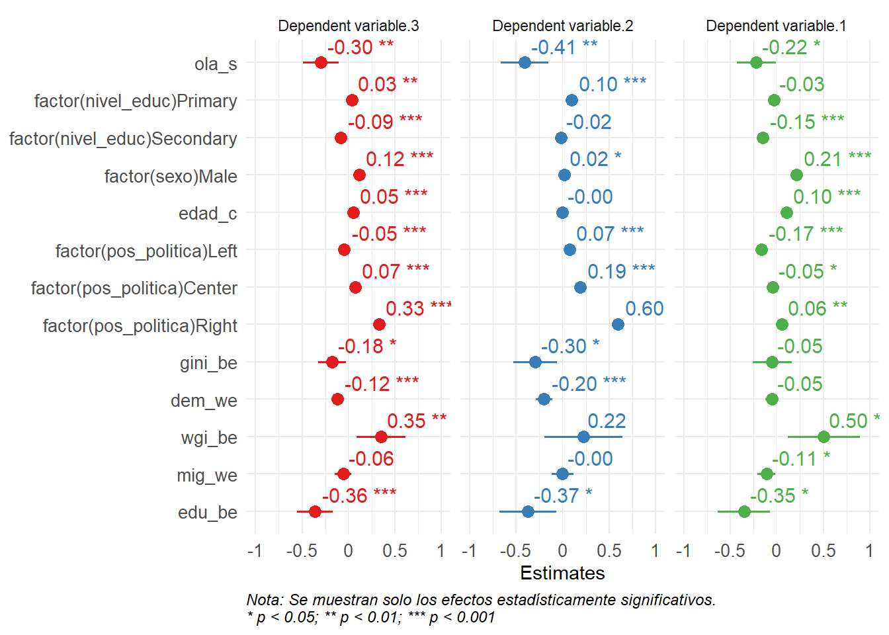

library(pacman)
p_load(dplyr,
tidyr,
ggplot2,
lme4,
janitor,
sjPlot,
summarytools,
ggeffects,
ggrepel,
scales,
plotly,
htmlwidgets)
load("input/proc/micro-macro-merge.rdata")
datos_merge_b <- datos_merge_b |>
mutate(across(where(haven::is.labelled), ~ vctrs::vec_data(.)),
pais= as.factor(pais))
datos_merge_b$country_wave = do.call(paste, c(datos_merge_b[c("pais", "ola")], sep = "_"))Resultados
olas <- datos_merge_b |>
group_by(ola) |>
summarise(horizontal_prom = mean(`cohesion_horizontal_ind`, na.rm=T),
vertical_prom = mean(`cohesion_vertical_ind`, na.rm=T),
cohesion_prom = mean(`cohesion_general_ind`, na.rm=T)) |>
pivot_longer(
cols = c(horizontal_prom, vertical_prom, cohesion_prom),
names_to = "indicador",
values_to = "promedio"
) |>
mutate(indicador = recode(indicador,
horizontal_prom = "Cohesión Horizontal",
vertical_prom = "Cohesión Vertical",
cohesion_prom = "Cohesión Social"))
olas <- olas |> mutate(ola = as.numeric(ola))
plot_ly(
data = olas,
x = ~ola,
y = ~promedio,
color = ~indicador,
type = 'scatter',
mode = 'lines+markers',
line = list(width = 2)
) |>
layout(
xaxis = list(title = "Ola"),
yaxis = list(title = "Promedio", range = c(0, 10)),
legend = list(
orientation = "h",
x = 0.5, xanchor = "center",
y = -0.30, yanchor = "bottom"
),
margin = list(b=130),
template = "plotly_white"
) |>
config(responsive = TRUE)Este primer gráfico muestra la evolución general en las últimas dos décadas de la Cohesión en América Latina, así como de sus dos dimensiones principales.
[Si no se ha hecho, explicar que el índice va de 0 a 10]. Se observa que los niveles generales de Cohesión se han mantenidos en niveles medios, entre 5.3 y 5.8. Es interesante además que hasta 2012 se observa una leve alza seguida de una caída brusca y una leve recuperación post-pandemia.
Ambas dimensiones siguen una tendencia similar. Peaks en 2012, mínimos en 2016, leve recuperación posterior. Sin embargo, es interesante la brecha que existe entre la dimensión horizontal y la vertical. La primera se encuentra sistemáticamente en niveles más altos. Esto es consistente con las ideas de que apuntan a la debilidad institucional de los Estados latinoamericanos, y que en contraste son las relaciones interpersonales y los contactos las que cobran mayor relevancia. Sería interesante contrastar si esta brecha se mantiene en otras regiones, y si lo hacen en la misma magnitud.
# --- 1) Tablas (como ya las venías construyendo) ---
olas_total <- datos_merge_b |>
group_by(ola) |>
summarise(
horizontal_prom = mean(cohesion_horizontal_ind, na.rm = TRUE),
vertical_prom = mean(cohesion_vertical_ind, na.rm = TRUE),
cohesion_prom = mean(cohesion_general_ind, na.rm = TRUE)
) |>
pivot_longer(
cols = c(horizontal_prom, vertical_prom, cohesion_prom),
names_to = "indicador",
values_to = "promedio"
) |>
mutate(indicador = recode(
indicador,
horizontal_prom = "Cohesión Horizontal",
vertical_prom = "Cohesión Vertical",
cohesion_prom = "Cohesión Social"
))
pais_destacado <- "Chile"
olas_pais_dest <- datos_merge_b |>
filter(pais == pais_destacado) |>
group_by(ola) |>
summarise(
horizontal_prom = mean(cohesion_horizontal_ind, na.rm = TRUE),
vertical_prom = mean(cohesion_vertical_ind, na.rm = TRUE),
cohesion_prom = mean(cohesion_general_ind, na.rm = TRUE)
) |>
pivot_longer(
cols = c(horizontal_prom, vertical_prom, cohesion_prom),
names_to = "indicador",
values_to = "promedio"
) |>
mutate(indicador = recode(
indicador,
horizontal_prom = "Cohesión Horizontal",
vertical_prom = "Cohesión Vertical",
cohesion_prom = "Cohesión Social"
))
# --- 2) Paleta manual para mantener mismo color por indicador ---
cols <- c(
"Cohesión Social" = "#1f77b4",
"Cohesión Horizontal" = "#2ca02c",
"Cohesión Vertical" = "#ff7f0e"
)
# --- 3) Plotly: 3 líneas Total (sólidas) + 3 líneas Chile (punteadas) ---
fig <- plot_ly() |>
# Total
add_trace(
data = filter(olas_total, indicador == "Cohesión Social"),
x = ~ola, y = ~promedio,
type = "scatter", mode = "lines+markers",
line = list(width = 2, color = cols["Cohesión Social"]),
marker = list(size = 6, color = cols["Cohesión Social"]),
name = "Cohesión Social — Total",
hovertemplate = "Indicador: Cohesión Social<br>Ola: %{x}<br>Promedio: %{y:.2f}<extra></extra>"
) |>
add_trace(
data = filter(olas_total, indicador == "Cohesión Horizontal"),
x = ~ola, y = ~promedio,
type = "scatter", mode = "lines+markers",
line = list(width = 2, color = cols["Cohesión Horizontal"]),
marker = list(size = 6, color = cols["Cohesión Horizontal"]),
name = "Cohesión Horizontal — Total",
hovertemplate = "Indicador: Cohesión Horizontal<br>Ola: %{x}<br>Promedio: %{y:.2f}<extra></extra>"
) |>
add_trace(
data = filter(olas_total, indicador == "Cohesión Vertical"),
x = ~ola, y = ~promedio,
type = "scatter", mode = "lines+markers",
line = list(width = 2, color = cols["Cohesión Vertical"]),
marker = list(size = 6, color = cols["Cohesión Vertical"]),
name = "Cohesión Vertical — Total",
hovertemplate = "Indicador: Cohesión Vertical<br>Ola: %{x}<br>Promedio: %{y:.2f}<extra></extra>"
) |>
# Chile (punteadas)
add_trace(
data = filter(olas_pais_dest, indicador == "Cohesión Social"),
x = ~ola, y = ~promedio,
type = "scatter", mode = "lines+markers",
line = list(width = 3, dash = "dot", color = cols["Cohesión Social"]),
marker = list(size = 8, symbol = "circle-open", color = cols["Cohesión Social"]),
name = paste0("Cohesión Social — ", pais_destacado),
hovertemplate = paste0("Indicador: Cohesión Social — ", pais_destacado,
"<br>Ola: %{x}<br>Promedio: %{y:.2f}<extra></extra>")
) |>
add_trace(
data = filter(olas_pais_dest, indicador == "Cohesión Horizontal"),
x = ~ola, y = ~promedio,
type = "scatter", mode = "lines+markers",
line = list(width = 3, dash = "dot", color = cols["Cohesión Horizontal"]),
marker = list(size = 8, symbol = "circle-open", color = cols["Cohesión Horizontal"]),
name = paste0("Cohesión Horizontal — ", pais_destacado),
hovertemplate = paste0("Indicador: Cohesión Horizontal — ", pais_destacado,
"<br>Ola: %{x}<br>Promedio: %{y:.2f}<extra></extra>")
) |>
add_trace(
data = filter(olas_pais_dest, indicador == "Cohesión Vertical"),
x = ~ola, y = ~promedio,
type = "scatter", mode = "lines+markers",
line = list(width = 3, dash = "dot", color = cols["Cohesión Vertical"]),
marker = list(size = 8, symbol = "circle-open", color = cols["Cohesión Vertical"]),
name = paste0("Cohesión Vertical — ", pais_destacado),
hovertemplate = paste0("Indicador: Cohesión Vertical — ", pais_destacado,
"<br>Ola: %{x}<br>Promedio: %{y:.2f}<extra></extra>")
) |>
layout(
xaxis = list(title = "Ola"),
yaxis = list(title = "Promedio", range = c(0, 10)),
legend = list(
orientation = "h",
x = 0.5, xanchor = "center",
y = -0.30, yanchor = "bottom",
traceorder = "normal",
itemwidth = 100 # <— controla el número de columnas por fila
),
margin = list(b = 130),
template = "plotly_white",
autosize = TRUE
) |>
config(responsive = TRUE)
figAcá las líneas puntuadas comparan la evolución de los indicadores en Chile en comparación a América Latina. En el índice general, Chile aparece como un país promedio, con una tendencia similar a la regional, pero hay algunas diferencias que vale la pena destacar:
Entre 2008 y 2014 Chile subió muy rápidamente en los indicadores de cohesión horizontal, manteniendose sistemáticamente por sobre el promedio regional. Sin embargo, desde ahí se produce una rápida caída. Hoy por hoy, Chile es un país promedio en términos de cohesión horizontal
CHile también mantuvo niveles de cohesión vertical sobre el promedio regional. Pero desde 2012 en particular, coincidiendo con el inicio de escandalos de corrupción y del surgimiento de nuevos actores sociales, se observa una caída muy brusca. Hoy, Chile es uno de los países con los indicadores de cohesión vertical más bajos en América Latina.
Acá vemos la evolución de las dimensiones de Cohesión Horizontal. A nivel regional, se observa mayor variación en la subdimensión de seguridad pública, con una caída entre 2012 y 2018, si bien seguida de una recuperación.
El caso de Chile es llamativo, pues sigue una tendencia similar a la regional, con la tendencia de que no observa la recuperación post-pandemia. Cabe destacar que esto, si bien muestra un deterioro objetivos en las condiciones de seguridad, tiene un fuerte componente subjetivo.
También resalta el comportamiento del indicador de confianza interpersonal. Entre 2010 y 2014 los niveles de confianza interpersonal en Chile estuvieron sobre el promedio regional. Pero desde ahí se registra una caída brusca que no muestra signos de recuperación.
En relación a la cohesión vertical, ambas subdimensiones se mantienen relativamente estables. Si hay que destacar, en ese sentido, que la confianza en las instituciones en al región se ha mantenido constantemente baja, manteniendose en la franja entre 3,3 y 4,1.
En Chile, en tanto, se observa una brusca caída, de casi dos puntos, en la confianza en las instituciones. Tal como sucedía en el promedio de de Cohesión Vertical, los niveles de confianza institucional en Chile se encuentran entre las más bajas de la región.
Modelo Multinivel
## Estandarizar continuos tras separar W/B (recomendado)
z <- function(x) as.numeric(scale(x))
datos_fit <- datos_merge_b %>%
filter(edad >= 18) |>
mutate(
pib_we = z(pib_we), gini_we = z(gini_we), wgi_we = z(wgi_we), dem_we = z(dem_we),
mig_we = z(mig_we), edu_we = z(edu_we),
pib_be = z(pib_be), gini_be = z(gini_be), wgi_be = z(wgi_be), dem_be = z(dem_be),
mig_be = z(mig_be), edu_be = z(edu_be),
edad_c = scale(edad) %>% as.numeric(),
ola_s = as.numeric(scale(ola, center = TRUE, scale = TRUE)),
nivel_educ = forcats::fct_drop(factor(nivel_educ)),
pos_politica = forcats::fct_drop(factor(pos_politica)),
sexo = forcats::fct_drop(factor(sexo)),
pais = forcats::fct_drop(factor(pais)),
country_wave = forcats::fct_drop(factor(country_wave)),
# --- cambiar categoría de referencia ---
nivel_educ = forcats::fct_relevel(nivel_educ, "Tertiary"), # ejemplo
pos_politica = forcats::fct_relevel(pos_politica, "Not declared") # ejemplo
) |>
select(cohesion_general_ind, cohesion_vertical_ind, cohesion_horizontal_ind,
nivel_educ, sexo, edad_c, ola_s, pos_politica,
pib_we, gini_we, dem_we, wgi_we, mig_we, edu_we,
pib_be, gini_be, dem_be, wgi_be, mig_be, edu_be,
country_wave, pais, wt) |>
na.omit()mh <- lmer(cohesion_horizontal_ind ~ 1 + ola_s +
factor(nivel_educ) + factor(sexo) + edad_c + I(edad_c^2) + factor(pos_politica) +
pib_we + gini_we + pib_be + gini_be +
dem_we + wgi_we + dem_be + wgi_be +
mig_we + edu_we + mig_be + edu_be +
mig_we:wgi_be +
edu_be:gini_be +
edu_be:gini_we +
(1 + pib_we | country_wave) + (1 | pais), data= datos_fit, weights= wt)
mv <- lmer(cohesion_vertical_ind ~ 1 + ola_s +
factor(nivel_educ) + factor(sexo) + edad_c + I(edad_c^2) + factor(pos_politica) +
pib_we + gini_we + pib_be + gini_be +
dem_we + wgi_we + dem_be + wgi_be +
mig_we + edu_we + mig_be + edu_be +
mig_we:wgi_be +
edu_be:gini_be +
edu_be:gini_we +
(1 | country_wave) + (1 | pais), data= datos_fit, weights= wt)
mc <- lmer(cohesion_general_ind ~ 1 + ola_s +
factor(nivel_educ) + factor(sexo) + edad_c + I(edad_c^2) + factor(pos_politica) +
pib_we + gini_we + pib_be + gini_be +
dem_we + wgi_we + dem_be + wgi_be +
mig_we + edu_we + mig_be + edu_be +
mig_we:wgi_be +
edu_be:gini_be +
edu_be:gini_we +
(1 | country_wave) + (1 | pais), data= datos_fit, weights= wt)
save(mh, file="output/modelo_horizontal.rdata")
save(mv, file="output/modelo_vertical.rdata")
save(mc, file= "output/modelo_completo.rdata")Coeficientes Modelos Multinivel
load("output/modelo_horizontal.rdata")
load("output/modelo_vertical.rdata")
load("output/modelo_completo.rdata")
# sjPlot::tab_model(mh, mv, mc,
# show.ci = FALSE)
p <- sjPlot::plot_models(mh, mv, mc,
grid = T,
rm.terms = c("pib_we",
"I(edad_c^2)",
"gini_we",
"edu_we",
"pib_be",
"dem_be",
"mig_be",
"gini_be:edu_be",
"gini_we:edu_be",
"ola_s:mig_be",
"ola_s:wgi_we",
"wgi_we",
"wgi_be:mig_we"),
# m.labels= c("Cohesión Horizontal",
# "Cohesión Vertical",
# "Cohesión Social"),
# axis.labels =
# c("Pob. Educ. Terciaria (between)",
# "Pob. Migrante (within)",
# "Gobernanza (between)",
# "Democracia (within)",
# "Gini (between)",
# "Derecha (ref=Sin posición)",
# "Centro (ref=Sin posición)",
# "Izquierda (ref=Sin posición)",
# "Edad",
# "Hombre (ref=Mujer)",
# "Educ. Secundaria (ref=Terciaria)",
# "Educ. Primaria (ref=Terciaria)",
# "Ola"),
show.p = T,
show.legend = F,
show.values = T
)Warning: Could not recover model data from environment. Please make sure your
data is available in your workspace.
Trying to retrieve data from the model frame now.
Warning: Could not recover model data from environment. Please make sure your
data is available in your workspace.
Trying to retrieve data from the model frame now.
Warning: Could not recover model data from environment. Please make sure your
data is available in your workspace.
Trying to retrieve data from the model frame now.p <- p +
labs(
caption = "Nota: Se muestran solo los efectos estadísticamente significativos. \n* p < 0.05; ** p < 0.01; *** p < 0.001"
) +
theme_minimal(base_size = 11) +
theme(
plot.caption = element_text(hjust = 0, face = "italic", size = 9),
axis.text = element_text(size = 10))
print(p)
Se calcularon modelos para cohesión general, así como horizontal y vertical. En el gráfico solo se muestran los efectos estadísticamente significativos.
Efecto temporal: Se observa que la cohesión social disminuye a medida que pasa el tiempo, una vez controlada por las demás variables. Esta tendencia se observa en los tres modelos, pero es más acentuada en la cohesión vertical, en línea con lo que mencionaba sobre las debilidades instituciones en la región.
Factores económicos: Contra lo esperado, el crecimiento económico no muestra efectos significativos sobre la cohesión social. Pero sí la desigualdad, particularmente en la dimensión vertical. Los países con mayores niveles de desigualdad muestran menores niveles de cohesión social. Esto es particularmente relevante en América Latina, la región más desigual del mundo.
Sobre los factores políticos, llama la atención los efectos negativo de la democracia sobre la cohesión social. Caídas en la calidad de la democracia en un país están asociadas a aumentos en la cohesión social. Pero si tenemos, por ejemplo, el caso de El Salvador, cuyo repunte en los niveles de cohesión - que pueden explorar en vislatam - no deja de ser sorprendente. Es posible que shocks autoritarios puedan generar efectos positivos temporales en la cohesión al dar solución rápida a demandas urgente de la población, como la seguridad.
Sin embargo, los resultados comparativos muestran que los países menos democráticos no son más cohesionados que los más democráticos: el efecto estructural de la democracia es neutro una vez controlados otros factores. En cambio, los países con mejores niveles de gobernanza sí presentan niveles consistentemente más altos de cohesión.
También es contraintuitivo el resultado observado para educación. Es importante aclarar que aquí educación terciaria incluye tanto el nivel universitario pero el técnico-profesional. Esto es una limitación metodológica por el diseño de LAPOP, pues los datos que tenemos en Chile (ver viselsoc) apuntan a que los técnicos profesionales se parecen más al resto de la población que a los universitarios. En cualquier caso, uno podría hipotetizar sobre si mayores niveles de educación se asocian a posturas más críticas, o si vemos procesos de individualismo y privatización, o si el efecto de la educación se ve revertido en contextos de alta desigualdad, por menciones algunas posibles hipótesis
Los aumentos de la población migrante tiene un efecto significativo solo para la cohesión horizontal, posiblemente reflejando las tensiones en la vida cotidiana que representan los nuevos flujos migratorios internacionales.
[El índice V-Dem muestra un dimnesión básica de democracia, incluyendo indicadores sobre elecciones libres, prensa libre y libertades civiles
El WGI incluye indicadores sobre rendición de cuenta, estabilidad política, efectividad del gobierno, calidad regulatoria, corrupción y estado de derecho]
Discusión y Conclusiones
Lo que sigue
- Determinantes macroestructurales
- Interacciones
- Pendientes aleatorias
- Educación, Democracia y Cohesión Social
- Relevancia académica y política
Lo que sigue es incluir otras formas de análisis para profundizar en lo que hemos expuesto aquí. En particular, podemos incluir en el modelo interacciones entre variables del mismo o de distintos niveles. Asimismo, explorar las pendientes aleatorias de algunas variables de interés, para observar si los efectos aquí expuestos muestran divergencias entre los países de la región, siendo particularmente relevante para nosotros el caso chileno.
Para cerrar, solo volver a recalcar la relevancia de este estudio, que con sus limitaciones y con lo que falta por hacer ya muestr resultados prometedores. Hay pocos estudios que se enfoque en comprender la cohesión social desde un enfoque longitudinal y multinivel, menos para América Latina, y creemos que los hallazgos que esta investigación pueda entregar son importante para aportar, desde los datos, a la discusió académica y política de la cohesión social.